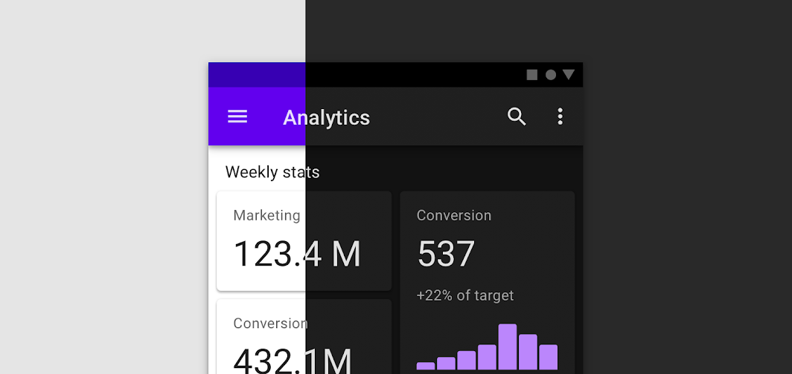

Dark mode

Dark themes reduce the luminance emitted by device screens, while still meeting minimum color contrast ratios. They help improve visual ergonomics by reducing eye strain, adjusting brightness to current lighting conditions, and facilitating screen use in dark environments – all while conserving battery power.